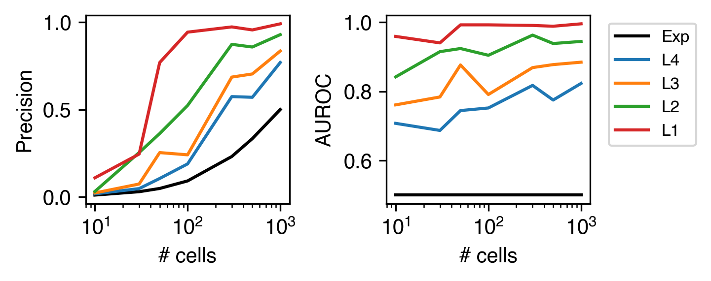

6. Downsample clustering#
Part of the Fig. 1 chapter — see it for the panel-by-panel map. The first code cell sets ENTEX_ROOT and activates the no-overwrite guard (see the Reproduction guide). Outputs shown are the author’s original run.
# === Reproduction setup — edit ENTEX_ROOT / REF_ROOT for your machine ===
import os, sys
ENTEX_ROOT = os.environ.get('ENTEX_ROOT', '/large_storage/zhoulab/zhoujt/project/ENTEx')
REF_ROOT = os.environ.get('REF_ROOT', '/large_storage/zhoulab/ref')
BOOK_ROOT = os.environ.get('BOOK_ROOT', f'{ENTEX_ROOT}/analysis/HumanCellEpigenomeAtlas')
sys.path.insert(0, BOOK_ROOT)
os.chdir(f'{ENTEX_ROOT}/analysis') # original working directory
import repro_guard # no-overwrite guard (default: skip existing)
import os
from glob import glob
import numpy as np
import pandas as pd
import matplotlib as mpl
import matplotlib.pyplot as plt
import seaborn as sns
import cooler
import anndata
import scanpy as sc
import scanpy.external as sce
from ALLCools.clustering import *
from ALLCools.plot import *
from ALLCools.mcds import MCDS
from sklearn.decomposition import TruncatedSVD
from sklearn.preprocessing import normalize
# mpl.use('agg')
mpl.style.use("default")
mpl.rcParams["pdf.fonttype"] = 42
mpl.rcParams["ps.fonttype"] = 42
mpl.rcParams["font.family"] = "sans-serif"
mpl.rcParams["font.sans-serif"] = "Helvetica"
import warnings
warnings.filterwarnings("ignore")
def dump_embedding(adata, name, n_dim=2):
# put manifold coordinates into adata.obs
for i in range(n_dim):
adata.obs[f'{name}_{i}'] = adata.obsm[f'X_{name}'][:, i]
return adata
indir = f'{REF_ROOT}/wmb/'
outdir = f'{ENTEX_ROOT}/analysis/method/'
adata = anndata.read_h5ad(f'{outdir}cell_301626_5kCG.h5ad')
adata
AnnData object with n_obs × n_vars = 301626 × 461706
var: 'chrom', 'end', 'start'
obsm: '5kCG_lsi', '5kCG_u100hm_tsne', 'X_lsi', 'X_tsne'
meta = pd.read_csv(f'{indir}CEMBA.mC.Metadata.csv.gz', header=0, index_col=0)
meta = meta.loc[adata.obs.index]
meta
---------------------------------------------------------------------------
NameError Traceback (most recent call last)
Cell In[57], line 2
1 meta = pd.read_csv(f'{indir}CEMBA.mC.Metadata.csv.gz', header=0, index_col=0)
----> 2 meta = meta.loc[adata.obs.index]
3 meta
NameError: name 'adata' is not defined
meta[['L1', 'L2', 'L3', 'L4', 'R1']] = meta['CellGroup'].str.split('_', expand=True).astype(str)
# for i in range(2,5):
# meta[f'L{i}'] = meta[f'L{i-1}'] + '_' + meta[f'L{i}']
# count = pd.DataFrame([meta[['L3','L4']].drop_duplicates()['L3'].value_counts(), meta['L3'].value_counts()], index=['L4','cell']).T
# count.loc[(count['L4']>1) & (count['cell']>=1000)].sort_index()
ct = 'c0_c0_c0_c0'.split('_')
# selc = (meta['L1']==ct[0]) & (meta['L2']==ct[1]) & (meta['L3']==ct[2]) & (meta['L4']==ct[3])
# meta.loc[selc, 'SubClass'].value_counts()
# selc = (meta['L1']==ct[0]) & (meta['L2']==ct[1]) & (meta['L3']==ct[2]) & (meta['L4']!=ct[3])
# meta.loc[selc, 'SubClass'].value_counts()
selc = (meta['L1']==ct[0]) & (meta['L2']==ct[1]) & (meta['L3']!=ct[2])
meta.loc[selc, 'SubClass'].value_counts()
SubClass
PGRN-PARN-MDRN Hoxb5 Glut 1278
PB Evx2 Glut 852
NTS Phox2b Glut 773
PH Pitx2 Glut 641
MB-ant-ve Dmrta2 Glut 551
PAG-ND-PCG Onecut1 Gaba 536
PARN-MDRNd-NTS Gbx2 Gly-Gaba 528
SPA-SPFm-SPFp-POL-PIL-PoT Sp9 Glut 503
PPN-CUN-PCG Otp En1 Gaba 462
PAG-RN Nkx2-2 Otx1 Gaba 460
PCG-PRNr Vsx2 Nkx6-1 Glut 447
PB Lmx1a Glut 431
CU-ECU-SPVI Foxb1 Glut 425
MRN-VTN-PPN Pax5 Cdh23 Gaba 425
CS-RPO Meis2 Gaba 368
PRT Tcf7l2 Gaba 367
PAG-MRN-RN Foxa2 Gaba 361
PRP-NI-PRNc-GRN Otp Glut 356
MY Lhx1 Gly-Gaba 329
CS-PRNr-DR En1 Sox2 Gaba 313
CUN-PPN Evx2 Meis2 Glut 306
PRC-PAG Pax6 Glut 303
LDT-PCG-CS Gata3 Lhx1 Gaba 293
CS-PRNr-PCG Tmem163 Otp Gaba 293
SCiw Pitx2 Glut 272
MRN Pou3f1 C1ql4 Glut 268
LDT-PCG Vsx2 Lhx4 Glut 233
PB-NTS Phox2b Ebf3 Lmx1b Glut 223
NTS-PARN Neurod2 Gly-Gaba 222
MB-MY Tph2 Glut-Sero 191
PH-LHA Foxb1 Glut 161
NI-RPO Gata3 Nr4a2 Gaba 159
SPVI-SPVC Tlx3 Ebf3 Glut 156
CUN Evx2 Lhx2 Glut 141
IC Tfap2d Maf Glut 111
POR Gata3 Gly-Gaba 93
PRNc Otp Gly-Gaba 88
PB Pax5 Glut 87
B-PB Nr4a2 Glut 84
NTS Dbh Glut 80
PH-ant-LHA Otp Bsx Glut 79
PRNc-PARN Tlx1 Glut 77
LDT-PCG St18 Gaba 68
SPVC Mafa Glut 67
ZI Pax6 Gaba 66
DTN-LDT-IPN Otp Pax3 Gaba 62
MV-SPIV-PRP Dmbx1 Gly-Gaba 61
IPN-LDT Vsx2 Nkx6-1 Glut 60
LHA-AHN-PVH Otp Trh Glut 59
DMX VII Tbx20 Chol 46
IF-RL-CLI-PAG Foxa1 Glut 44
SNr Six3 Gaba 42
PRP Otp Gly-Gaba 40
Name: count, dtype: int64
cell_list = []
ct = 'c0_c0_c0_c0'.split('_')
selc = (meta['L1']==ct[0]) & (meta['L2']==ct[1]) & (meta['L3']==ct[2]) & (meta['L4']==ct[3])
cell_list.append(np.random.choice(meta.index[selc], 1000, False))
print(selc.sum())
selc = (meta['L1']==ct[0]) & (meta['L2']==ct[1]) & (meta['L3']==ct[2]) & (meta['L4']!=ct[3])
cell_list.append(np.random.choice(meta.index[selc], 1000, False))
print(selc.sum())
selc = (meta['L1']==ct[0]) & (meta['L2']==ct[1]) & (meta['L3']!=ct[2])
cell_list.append(np.random.choice(meta.index[selc], 1000, False))
print(selc.sum())
selc = (meta['L1']==ct[0]) & (meta['L2']!=ct[1])
cell_list.append(np.random.choice(meta.index[selc], 1000, False))
print(selc.sum())
selc = (meta['L1']!=ct[0])
cell_list.append(np.random.choice(meta.index[selc], 1000, False))
print(selc.sum())
1427
1397
14941
32336
251525
print(meta[['L1','L2','L3','L4']].value_counts().shape,
meta[['L1','L2','L3']].value_counts().shape,
meta[['L1','L2']].value_counts().shape,
meta['L1'].value_counts().shape)
(2573,) (1346,) (411,) (61,)
for i,selc in enumerate(cell_list):
print(adata.obs.index.isin(selc).sum())
1000
1000
1000
1000
1000
for i,selc in enumerate(cell_list):
tmp = adata[adata.obs.index.isin(selc)]
tmp.write_h5ad(f'{outdir}cell_dsgroup{i}_5kCG.h5ad')
adata = anndata.read_h5ad(f'{outdir}cell_dsgroup0_5kCG.h5ad')
for i,ncell in enumerate([10, 30, 50, 100, 300, 500, 1000][::-1]):
tmp = adata[np.random.choice(adata.obs.index, ncell, False)]
tmp.write_h5ad(f'{outdir}cell_dsgroup0_{i}_5kCG.h5ad')
adata_list_ref = [anndata.read_h5ad(f'{outdir}cell_dsgroup{i}_5kCG.h5ad') for i in range(4)]
adata_list_alt = [anndata.read_h5ad(f'{outdir}cell_dsgroup0_{i}_5kCG.h5ad') for i in range(7)]
adata_list_alt[0].X
<1000x461706 sparse matrix of type '<class 'numpy.float32'>'
with 14271903 stored elements in Compressed Sparse Row format>
import sys
import anndata
import scanpy as sc
from ALLCools.clustering import *
from ALLCools.plot import *
from sklearn.preprocessing import normalize
npc = 20
raw_key = '5kCG_lsi'
obsm_key = 'X_lsi'
model = LSI(scale_factor=10000,
n_components=50,
algorithm='arpack',
random_state=0)
i, j = int(sys.argv[0]), int(sys.argv[1])
adata_ref = anndata.read_h5ad(f'{outdir}cell_dsgroup{i}_5kCG.h5ad')
adata_alt = anndata.read_h5ad(f'{outdir}cell_dsgroup0_{i}_5kCG.h5ad')
adata_merge = anndata.concat([adata_ref, adata_alt], axis=0)
print(i, j, adata_merge.shape)
filter_regions(adata_merge, n_cell=5)
model.fit_transform(adata_merge, obsm_name=raw_key)
significant_pc_test(adata_merge, p_cutoff=0.05, obsm=raw_key, update=False)
adata_merge.obsm[obsm_key] = normalize(adata_merge.obsm[raw_key][:, :npc], axis=1)
tsne(adata_merge, obsm=obsm_key, metric='euclidean', exaggeration=-1, perplexity=50, n_jobs=-1)
adata_merge.obsm[f'5kCG_u{npc}_tsne'] = adata_merge.obsm['X_tsne'].copy()
sc.pp.neighbors(adata_merge, use_rep=obsm_key, n_neighbors=25)
sc.tl.leiden(adata_merge, resolution=1.0, key_added=f'5kCG_u{npc}_leiden')
adata_merge = anndata.AnnData(obs=adata_merge.obs, obsm=adata_merge.obsm, obsp=adata_merge.obsp)
adata_merge.write_h5ad(f'{outdir}cell_dsgroup{i}_{j}_5kCG_embed.h5ad')
np.savetxt(f'{outdir}params.txt', [[i+1,j] for i in range(4) for j in range(7)], fmt='%d')
from sklearn.metrics import average_precision_score, roc_auc_score
pr_score, roc_score, tpr, prc = np.zeros((4,4,7,5))
for i in range(4):
for j in range(7):
adata_merge = anndata.read_h5ad(f'{outdir}cell_dsgroup{i+1}_{j}_5kCG_embed.h5ad')
ncell = adata_merge.shape[0]
label = np.zeros(ncell, dtype=int)
npos = len(label) - 1000
label[1000:] = 1
for k,npc in enumerate([5,10,15,20,25]):
adata_merge.obs[f'5kCG_u{npc}_leiden'] = adata_merge.obs[f'5kCG_u{npc}_leiden'].astype(str)
nct = adata_merge.obs[f'5kCG_u{npc}_leiden'].astype(str).nunique()
count = adata_merge.obs.loc[label==1, f'5kCG_u{npc}_leiden'].value_counts() / adata_merge.obs[f'5kCG_u{npc}_leiden'].value_counts() / (npos / ncell)
selct = count.index[count>1]
pred = adata_merge.obs['5kCG_u20_leiden'].isin(selct).astype(int)
# tp = (pred & label).sum()
# tpr[i,j] = tp / npos
# prc[i,j] = tp / pred.sum()
pr_score[i,j,k] = average_precision_score(label, pred)
roc_score[i,j,k] = roc_auc_score(label, pred)
# roc_tmp = [roc_auc_score(label, adata_merge.obs[f'5kCG_u20_leiden']==str(k)) for k in range(nct)]
# # pred = np.
# pr_score[i,j] = np.max([average_precision_score(label, adata_merge.obs[f'5kCG_u20_leiden']==str(k)) for k in range(nct)])
# roc_score[i,j] = np.max(roc_tmp)
idx = np.array([10,30,50,100,300,500,1000])
fig, axes = plt.subplots(1, 2, figsize=(5,2), dpi=300, sharex='all')
ax = axes[0]
ax.plot(idx, [xx/(xx+1000) for xx in idx], 'k', label='Exp')
for i in range(4):
ax.plot(idx, pr_score[i].max(axis=1)[::-1], label=f'L{4-i}')
ax.set_ylabel('Precision')
ax.set_xlabel('# cells')
ax = axes[1]
ax.plot(idx, [0.5 for xx in idx], 'k', label='Exp')
for i in range(4):
ax.plot(idx, roc_score[i].max(axis=1)[::-1], label=f'L{4-i}')
ax.set_ylabel('AUROC')
ax.set_xlabel('# cells')
ax.legend(bbox_to_anchor=(1.05, 1), loc='upper left', fontsize=8)
# ax = axes[1,0]
# for i in range(4):
# ax.plot(idx, tpr[i][::-1], label=f'Distinguished group {i}')
# ax.plot(idx, [0.5 for xx in idx], 'k')
# ax = axes[1,1]
# for i in range(4):
# ax.plot(idx, prc[i][::-1], label=f'Distinguished group {i}')
# ax.plot(idx, [xx/(xx+1000) for xx in idx], 'k')
# ax.set_xticks(idx)
ax.set_xscale('log')
fig.tight_layout()
fig.savefig(f'{outdir}cell_dsgroup_precision_roc.pdf', transparent=True)
idx = np.array([10,30,50,100,300,500,1000])
fig, axes = plt.subplots(1, 2, figsize=(5,2), dpi=300, sharex='all')
ax = axes[0]
ax.plot(idx, [xx/(xx+1000) for xx in idx], 'k', label='Exp')
for i in range(4):
ax.plot(idx, pr_score[i][::-1], label=f'L{4-i}')
ax.set_ylabel('Precision')
ax.set_xlabel('# cells')
ax = axes[1]
ax.plot(idx, [0.5 for xx in idx], 'k', label='Exp')
for i in range(4):
ax.plot(idx, roc_score[i][::-1], label=f'L{4-i}')
ax.set_ylabel('AUROC')
ax.set_xlabel('# cells')
ax.legend(bbox_to_anchor=(1.05, 1), loc='upper left', fontsize=8)
# ax = axes[1,0]
# for i in range(4):
# ax.plot(idx, tpr[i][::-1], label=f'Distinguished group {i}')
# ax.plot(idx, [0.5 for xx in idx], 'k')
# ax = axes[1,1]
# for i in range(4):
# ax.plot(idx, prc[i][::-1], label=f'Distinguished group {i}')
# ax.plot(idx, [xx/(xx+1000) for xx in idx], 'k')
# ax.set_xticks(idx)
ax.set_xscale('log')
fig.tight_layout()
fig.savefig(f'{outdir}cell_dsgroup_precision_roc.pdf', transparent=True)
